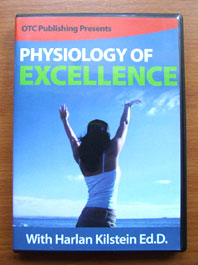
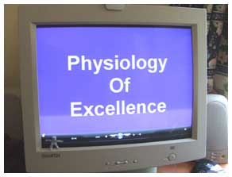
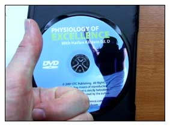

Genius
Home: Product Review: "Physiology of
Excellence"
A Review of...
"Physiology of
Excellence"

The NLP training
program DVD from
Dr Harlan Kilstein
I recently bought the DVD program: Physiology of Excellence
produced by Dr Harlan Kilstein, and thought it might be useful
to write up a review for others. Here goes...
THE DVD
The DVD is not cheap. I think I paid $97 for it. It came
quickly, was well packaged and presented. I was busy when it
arrived and stuck it on a shelf and promptly forgot about it
for a month or more. More fool me. People pay thousands
for therapy and drugs that give you less real value than the
technique found in this DVD.
Anyhow, I finally got it out, into the DVD player and
dragged my wife in to watch it with me.
YOUR PRESENTER
First shocker is that Dr Kilstein, the NLP
master, used to be... how can I put this delicately...
FAT!!! These days Harlan's
slim and into yoga and looks the business, but when he
made this DVD he was a little chunky, and had a WHOLE
lotta love to go round if you catch my drift.
He's clearly put his Physiology of
Excellence technique to good use to
change his own habits and become slim and dynamic again. Good
for him.
(I know this because I had already bought
his newer program "Finger Healing" -- which
is about special hand gestures that you make with your
hands to channel and direct positive CHI energy in your
body, mind and life).
THE STYLE OF PRESENTATION
Don't be expecting Hollywood production values from
your Physiology of
Excellence DVD. It's a little scratchy
occasionally on the audio (when he catches his microphone with
his sleeve or something). He has basically set up a decent
enough video camera and is sitting in front of it.
It's essentially a peek into Dr Kilstein's office while he
1) talks to you about the technique 2) demonstrates the
technique with a patient.
In other words, be prepared that it can be a little boring
visually. My wife bailed out after 20 minutes (she's very
impatient with this sort of thing!). I encourage YOU to
stick with it though. You only need to go through it once and
then you've got the technique for life. And it will or
can change your life if you use it.
THE CONTENT
 I was already familiar with the main idea
behind the Physiology of Excellence. I
learnt about it 20 years ago, and credit it with changing
my belief system regarding happiness and emotions. Let me
explain.
In the West, we have an erroneous idea of happiness as
solely a by-product of certain favourable conditions. As such
we think of happiness as something we must pursue and chase
after. And we tend to give power to things and other people in
the belief that only they can give us happiness. This is
wrong.
You and I have the power to control and
operate our own emotions without dependence on external
circumstances. If you want to be happy, you can. If you want to
feel confident, you can. If you want to feel ecstatic
and blissful, or dynamic and empowered... you can!!
THE ANSWER
Physiology of
Excellence shows you how. It reveals
specific techniques that you can use to operate your
biochemistry at will, so that you feel exactly how you want to
feel.
You can finally be FREE from foul moods that strike you out
of nowhere. FREE from mind-numbing bouts of anxiety. FREE from
life-restricting doubt. FREE from tiredness and fatigue.
FREE from misery and helplessness.
The old meaning of "pursue" was to practice. The
pursuit of Happiness was always meant as the
practice of Happiness. This DVD program by Dr
Kilstein gives you the know-how to practice happiness, joy,
confidence, enthusiasm, whenever you want to. You can turn
yourself around in minutes.
You can overcome a bad habit of a lifetime within 3 days
using this technique.
MY THOUGHTS
The Physiology of
Excellence program has been
cherry-picked from the techniques of NLP. Is it worth it all on
it's own? I have to say YES! When I first learnt it, it freed
me. I came to realise that I was in charge of my own feelings.
I wasn't a victim of fate or circumstance -- I was a
Creator of Experience!
We are here to CREATE. To take charge of our mind and bodies
in order to create greatly. This is our destiny and I sincerely
believe that the Physiology of
Excellence DVD reveals a technique that
is supremely empowering to anyone with the wisdom to make use
of it.
 Message to Dr Kilstein: you may have had a
fascinatingly tubby tummy when you made this DVD but you
have obviously got it going on now.
You've used your knowledge to improve your own life,
becoming slim and successful, widely known online, and
you've made a great technique available that other people
can benefit from. Your PHYSIOLOGY OF EXCELLENCE DVD gets
my double thumbs up! Well done!
Check out the "Physiology of Excellence"
website here.
HOME
|